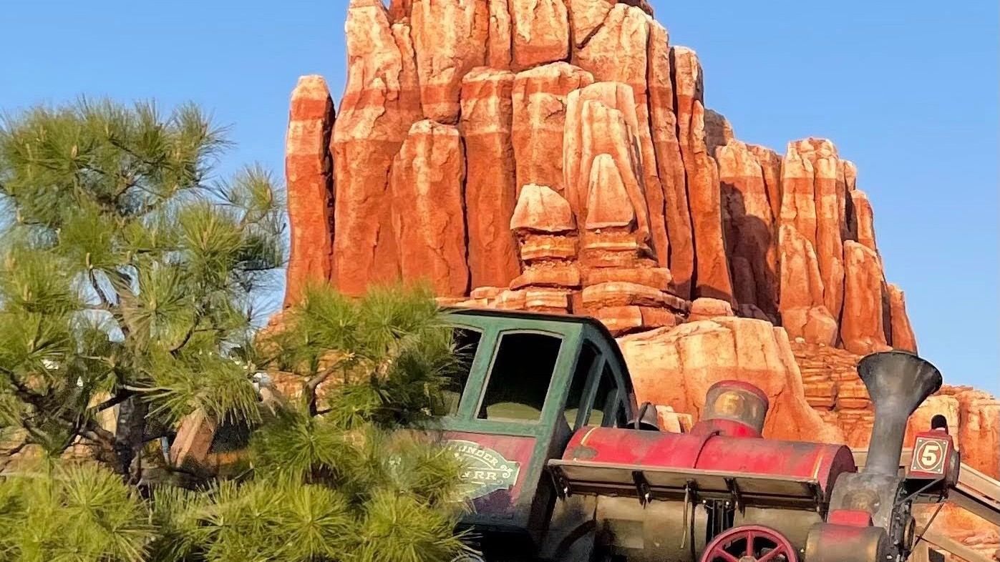

ウエスタンランドにそびえる、赤茶色の岩山。ビッグサンダー・マウンテンのふもとには鉱山会社の駅舎があり、列車が岩肌のあいだを走り抜けています。地下へ続く洞窟と地上の線路、水辺の小屋。遠くからはひとつの山に見える場所にも、近づくほどに違う仕事と暮らしが現れます。
この山の奥には、昔から超自然的な力がひそむといわれていました。金を求める人々が押し寄せるよりも前から、不気味な話が人々を遠ざけ、山へ入ることをためらわせてきたのです。赤い岩の下にあるものは、容易に手を伸ばせる富ばかりではありませんでした。
それでも金は発見され、坑道が開かれ、山には鉱山会社の仕事場が築かれました。地上には物資を運ぶ設備があり、建物には鉱夫たちの持ち物が並んでいます。近づく者の少なかった土地は、地下を掘る人、採れた金を調べる人、鉄道を支える人の働く場所になっていきます。
今はゴールドラッシュの全盛期ほどの活気はありません。しかし、駅舎には人の姿があり、洞窟の鑑定所では火が燃えています。そのそばを出発する列車の運転室には、機関士がいない。働く人々の営みと、山にまつわる言い伝えが、同じ景色の中に重なっています。
山に転機が訪れたのは1850年代のこと。ひとりの老いた探鉱者が、この場所で金を発見しました。長く人々を遠ざけてきた岩山へ、今度は富を求める人々が向かいます。初めて採掘に挑む者たちも、西へと続く流れに加わっていきました。
このころ勢いを増したのが、ビッグサンダー・マウンテン・マイニング・カンパニーです。鉱山会社は約30年にわたり、大量の金を産出しました。一度の発見から始まった金探しは、鉱石を掘り、運び、調べる仕事を伴う、長い鉱山の歴史へとつながります。
その歩みを残しているのが、山に設けられたさまざまな仕事場です。駅舎の窓から見渡せる採掘現場、地下から鉱石を引き上げるトロッコ、金の重さを量る鑑定所。金鉱の繁栄には、坑道の奥だけで完結しない仕事のつながりがありました。
やがて1880年代に入ると、山の資源は乏しくなり、長く続いた産金に陰りが訪れます。鉱夫たちは残る金を求めて、さらに深くへ向かうようになりました。繁栄を支えてきた地上の設備をたどった先で、採掘の行方は、山の奥の異変へとつながっていきます。
駅舎の中には、発掘作業に使う機械や道具とともに、鉱夫たちの持ち物が置かれています。鉱山会社の名を掲げるこの建物は、山を走る列車の駅であり、地下の仕事へ目を向ける場所でもあります。窓の外には採掘現場が広がり、建物の内側では、床下へと続く設備が目に入ります。
床下の坑内から天井に向かって、一本の線路が垂直に伸びています。そこに固定されているのは、地下と地上のあいだで鉱石や物資を運ぶトロッコです。山の外側を走り回る鉱山列車とは違い、この車両は同じ場所を上下して、離れた仕事場をつないでいます。
地下からは採掘した鉱石を上げ、坑内で必要になる物資は下へ送る。鉱夫たちにとって、このトロッコはエレベーターのような役目を担います。駅舎の床下をのぞくと、金を掘る仕事の奥行きは、岩山の横の広がりだけでなく、足元から続く深さとしても見えてきます。
近くの壁にはベルがあり、そのそばにトロッコの使用規則と合図の説明が取り付けられています。1回鳴らせば上昇、2回鳴らせば下降。地上と坑内で離れて働く人々は、ベルの音の回数によって、車両をどちらへ動かすのかを伝え合います。
線路とトロッコだけでは、運搬の様子は半分しか見えてきません。ベルと説明書きまで目を移すと、荷を動かす機械のそばに、その動きを知らせ合う人々の仕事が加わります。壁に残る短い指示も、地下の作業を支える道具のひとつです。
垂木に固定されている、金網でできた担架も見逃せません。坑内で事故が起きたときには下へ降ろし、負傷した鉱夫を乗せて引き上げるためのものです。鉱石や物資を運ぶ設備の近くに、地下で働く仲間を地上へ戻すための備えが置かれています。
ベルは上下の仕事を結び、担架はそこで働く人の身を支えます。いずれも、大量の金を産出したという数字だけからは見えてこない品々です。駅舎の中をたどると、山の歴史は、日々の運搬や、事故に備える具体的な仕事へと姿を変えていきます。
駅舎を離れる前、列車が左へ曲がるところに、洞窟の中の鑑定所があります。ここは金塊の重さを量り、金塊をお金に換える場所です。山から金が採れても、それを調べ、価値を確かめる仕事は別にあります。坑道から地上へ運ばれたものの、その先を受け持つ仕事場です。
中には、鑑定に使う秤が並んでいます。大量の鉱石を運ぶトロッコがある一方で、ここに必要なのは、金の重さを量る道具。山から荷を引き上げる大きな動きの先に、目の前の金塊を扱う仕事があります。鉱山の設備は、同じ金をめぐりながら、それぞれ違う役目を持っています。
さらに、金をのべ棒にするための型や道具も置かれています。そして、その作業に使う火は、今も赤々とたかれています。金を溶かす熱が、この場所では働き続けているのです。洞窟の暗さの中に見える炎は、鉱山の現在へと目を向ける手がかりになります。
線路、運搬用のトロッコ、鑑定用の秤、のべ棒の型。それぞれをつなぐと、金を掘ることから、地上へ上げ、量り、形を整えるところまで、山の仕事の輪郭が見えてきます。駅舎は列車の出発点ですが、その周囲には、金を送り出すための仕事場も集まっています。
全盛期のにぎわいが去った後も、ここは採掘の続く鉱山です。火のそばに並ぶ道具は、過ぎ去った繁栄だけを語る品ではありません。ベルのある建物から、金を扱う洞窟へ。地下と地上を結ぶ仕事は、その先にも続いています。
鉱山の暮らしは、金を掘り、量る仕事だけで成り立っているわけではありません。金網に覆われた掲示板には、ポニーエクスプレス、土地測量会社、金分析事務所、駅馬車など、さまざまな広告が貼られています。文字を追うと、駅舎の外へ続く人や物の往来が見えてきます。
手紙を運ぶ仕事、土地を測る仕事、金を調べる仕事、人を運ぶ仕事。広告に並ぶ名前は、それぞれ異なる用事と結びついています。坑内の道具が採掘現場を伝えるのに対して、掲示板は、その現場を囲む社会の広がりを残しています。
広告の中には、ウイスキーやタバコ、催し物の案内もあります。生活に必要な連絡や商売の知らせのそばに、仕事から離れた時間に関わるものも並ぶ。掲示板の紙片には、鉱山へやって来た人々が、掘る仕事以外にも用事を持っていたことが表れています。
駅舎の外へ目を移すと、小屋のあいだには洗濯の道具が残っています。木枠から吊り下げられた鉄釜は、鉱夫たちが洗濯に使うもの。小屋を結ぶロープには、バンダナや肌着が干されています。地面を掘る機械とは違う働きをする鉄の器が、暮らしのすぐそばにあります。
鉄釜とロープ、そこに干された衣類を一緒に見ると、小屋は住まいとしての表情を持ちはじめます。鉱夫たちは金を求めてこの地へ来ましたが、山で日々を送るあいだには、衣類を洗い、乾かす仕事もあります。採掘の歴史をたどる視線が、身につけるものへと近づく場所です。
今もここで働いているのは、鉱夫や鉄道の保線作業員たちです。ゴールドラッシュの時代に富を夢見て西部へ来た人々は、全盛期のにぎわいが去った後も、山に関わる仕事を続けています。訪れた人々を、昔からの仲間のように温かく迎えるのも、彼らです。
そのあいさつは「ハウディ」。仕事場に入るときの言葉にも、西部の人々の暮らしがあります。駅舎で人に出会い、掲示板の用事をたどり、小屋に干された衣類へ目を移す。岩山の周囲には、働きながらここで暮らす人々の、現在の時間が流れています。
山の資源が乏しくなった1880年代、鉱夫たちは爆薬を使い、さらに深い場所へと掘り進めるようになりました。約30年にわたる産金の後に続いたのは、山の奥へ金を求める採掘です。その先で、人々の手に負えない異変が起こりはじめます。
新しく開いた坑道からは、奇妙な音が聞こえるようになりました。機械には故障が起こり、仕事を進めるための設備にも異変が及びます。金を取り出そうと深く入るほど、昔からこの場所にささやかれていた、目に見えない力が身近になっていきました。
そして鉱山列車は、機関士のいないまま駅を出ていくようになります。人々を乗せ、岩山と洞窟のあいだを走っている列車にも、その運転を担う人の姿はありません。鉱夫や保線作業員が働く駅から、空いた運転室のまま列車が走り出していきます。
坑内にとどろく不審な物音、ゆらゆらと揺れるランプや鉱山バケツ。普段なら仕事を支える道具も、ここでは落ち着いた姿を保っていません。地上と地下を結んできた鉱山の中で、働く人々の営みは、今も山の異変と隣り合わせにあります。
岩山のふもと、水辺に目を向けると、愛犬をそばに置いて釣りをする老人がいます。セドナ・サム。かつてこの鉱山で採掘現場の監督を務めた人物です。引退した後も山を離れず、犬とともにここで暮らしています。
サムは桟橋のロッキングチェアでくつろぎながら、釣り糸を垂れています。列車が通る岩山のそばに、ゆっくりと腰を落ち着ける場所がある。現場の監督だった人の今をたどると、鉱山には働く時間だけでなく、仕事を退いた後の暮らしも続いていることがわかります。
愛犬の名はディガー。その名には、サムを救った出来事が残されています。サムが落石で埋まってしまったとき、犬が掘り出して助けました。この救出が、ディガーという名の由来です。水辺で寄り添うひとりと一匹には、危難を越えたつながりがあります。
駅舎の金網担架は、負傷した仲間を地上へ引き上げるための備えでした。一方、ディガーの名が残すのは、ひとりの人を掘り出して救った出来事です。鉱山の仕事を支える道具の歴史と、そこで生きる人の来歴は、この山の異なる場所に残っています。
鉱山列車がたどる山には、採掘の設備とは違う風景も広がっています。暗い洞窟にあるのは、輝く石筍と鍾乳石です。地面から伸びる岩と、天井から下がる岩に囲まれた空間を抜けると、地上にはサボテンの根づく峡谷が続きます。
さまざまな種類のサボテンが並ぶ、サボテン峡谷。山の入口にもサボテンがあり、花を咲かせることがあります。岩肌を走る列車に目を向けていると通り過ぎてしまいそうな場所にも、植物の姿をたどる時間があります。
橋をくぐった先には、オポッサムの家族がいます。木の枝から尾でぶら下がっているのは、母親と2匹の子供。父親は、その近くの岩の上にいます。枝の上と岩の上へ視線を動かすと、ひとまとまりの家族の姿が見えてきます。
コヨーテ・キャニオンでは、コヨーテたちが遠吠えをしています。その先には鉱夫たちの小屋があり、洗濯物が干されています。洞窟、サボテンの峡谷、動物たちのいる場所、小屋のある暮らしの場所。山をたどる道筋には、異なる景色が続いています。
赤い岩山の表情も、時間や天候によって変わります。夕焼けに包まれる山、雨上がりに虹の見える空。地底には言い伝えの残る鉱山があり、その地上では、働く人と動物たちの日々が、それぞれの場所で続いています。
赤い岩山と鉱山の暮らしを、東京の風景へと形にした人々もいます。ビッグサンダー・マウンテンが東京ディズニーランドに開業したのは、1987年7月4日のことでした。岩の造形だけでなく、駅舎、看板、鉱山道具といった細部にも、イマジニアたちの仕事が重なっています。
初代カリフォルニア版では、デザイナーのトニー・バクスターが、ユタ州のブライスキャニオンの景観に着想を得ました。一方、東京を含む後続の3施設は、モニュメントバレーに似た景観を備えています。東京の赤い山をたどるときには、初代の岩山とは異なる景観の流れが背景にあります。
シリーズ全体の制作史では、セメントと塗料で岩肌をつくる造形と彩色の仕事が語られています。また、西部のゴーストタウンを探して、鉱石用の車両、歯車、バケツなどを集める仕事もありました。大きな景観を造る作業と、使われてきた道具を探す作業の両方が、鉱山の風景を支えています。
東京の駅舎について、パット・バークはもう少し具体的な回想を残しています。彼が挙げたのは、川石を使う仕上げ、採掘で出た石を思わせる扱い、柱と梁による構成でした。建築を担当するイマジニアたちと働き、こうした手法を東京の乗り場の建物にも用いたと振り返っています。
それは、列車の乗り場を収める建物を、鉱山の一部として形にする仕事でもありました。山の岩と、建物を支える石や木。バークの回想に目を向けると、東京版の制作は、遠くから目立つ山だけでなく、人が近づき、道具を見る駅舎の構成にまで及んでいたことがわかります。
バークが使った東京向けの制作資料には、看板や小道具の図面も残っています。また、彼の旧蔵資料として公開された初期案には、機械の並びや室内の構想を描く紙面があります。岩山全体の姿を決める一方で、建物の中で何が見えるのかを考える仕事も進められていました。
東京向けの作業範囲を記した資料には、大きな道具を所定の場所へ配置すること、関連する部分をつなぎ合わせること、必要なスケッチを作ることが挙げられています。圧力計や笛などの小さな部品を、大きな機器へ取り付ける仕事もありました。道具を集めた後にも、それぞれを周囲の設備と結びつけて据える作業が待っていたのです。
バークの旧蔵写真として紹介されたものには、開業前の完成状態にある東京版の細部を撮影した写真群もあります。図面で考える段階と、実際に据えられたものを写真に収める段階。こうした制作資料は、鉱山の雰囲気が、大きな山の形だけで決まったものではないことを伝えています。
東京向けの準備の一場面は、バーク本人が2009年のインタビューで語っています。トゥジュンガで、東京のビッグサンダー用のセットや鉱山道具を準備していたときのこと。隣では『キャプテンEO』が撮影されていました。
そこへ訪れたマイケル・ジャクソンは、並んでいる道具の行き先を尋ねます。バークは、東京向けのビッグサンダーだと答えたといいます。華やかな撮影の隣で、鉱山の暮らしを支える道具の準備が進んでいた。その光景を伝える、制作者本人の記憶です。
バークの回想には、カリフォルニアの「マイン・トレイン・スルー・ネイチャーズ・ワンダーランド」で使われた列車の一部を、1987年に東京のビッグサンダーの乗り場付近へ転用した話もあります。かつて走っていた車両に、海を渡った場所で新たな役目を持たせる。旧車両を受け継ぐ仕事も、東京版の制作につながっていました。
柱や梁、看板、道具、そして別の場所で役目を持っていた車両。東京版を形にした仕事をたどると、造ること、選ぶこと、運ぶこと、据えることがつながって見えてきます。駅舎のベルや小屋の鉄釜へと視線を近づける時間は、その細部を整えた人々の仕事にも重なっています。
資料確認日：2026年10月31日。制作資料は所蔵品の紹介・掲載画像で確認し、図面・写真は転載していません。
最終編集日：